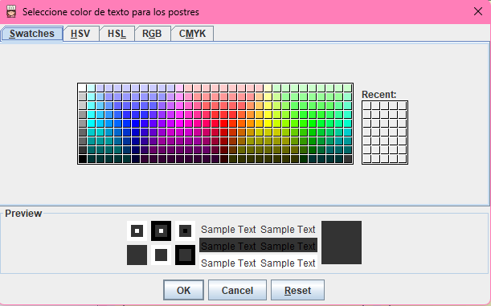

Escoge el color del texto
Esta opción te permite personalizar el color del texto para los ingredientes y los postres.
Pasos para cambiar el color del texto:
- Haz clic en la opción Escoge el color del texto en el menú de personalización.
- Se abrirá un cuadro de diálogo de selección de color JColorChooser.
- En el cuadro de diálogo, elige un color para el texto de los ingredientes y haz clic en Aceptar.
- A continuación, selecciona otro color para el texto de los postres y haz clic en Aceptar.
- Los colores seleccionados se aplicarán inmediatamente en la aplicación.
Nota:
El color de texto seleccionado será aplicado a todo el contenido que involucre ingredientes o postres en la interfaz.
